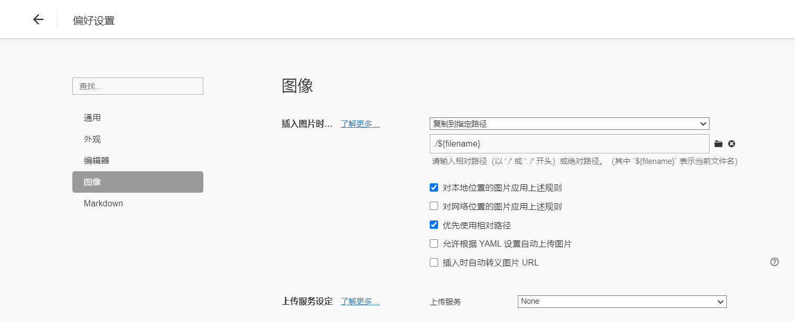

前言
在这国庆的最后一天，鉴于没什么游戏可以玩，把这个博客重新拾起。虽然之前的源文件在原来的老电脑丢了，但俗话说人要向前看，也是时候摒弃前面的东西，重新建立一下。当时创建的时候，还对 git、hexo 这些不是很熟悉，只是跟着别人的步骤依次做下来，导致没有把源码放在一个分支上；三年过去了，这次的我可跟以前不一样了，不会再犯这个错误了。
在重新建立这个博客之前，尝试过使用 wordprees 建立博客，但是建好了后，它上面的 markdown 插件太难用了，公式、图片等各种麻烦，远远不如 Hexo 这个静态博客，遂放弃。
这篇文章也旨在记录博客中的一些问题和解决方法，以供参考。
平台选择
为了更加方便的进行环境的配置，这次我选择在 Windows 11 中的 WSL2 下搭建这个博客，并将这个博客放在这里。之前是在 Windows 下的，但是都知道，Windows 下环境搭建真的是很麻烦，相较于 Windows，Linux 是真的方便，敲一行代码就可以安装好整个环境。通过知乎上的一篇文章，似乎 WSL2 是直接将整个电脑改造成一个虚拟机，Windows 和 Linux 都在这个虚拟机上跑。这样虽然对性能有部分损失，但是换来了优质的体验，这两个系统几乎是无缝操作的，Linux 下文件可以直接被复制到 Windows 下，同样，反过来也可以访问和修改。这样就即拥有了 Linux 的优秀的命令行工具，又可以使用 Windows 下的窗口，可谓两全其美。
由于只剩下了原来网站部署后的文件，一开始是想有没有什么方法可以还原它。理论上应该是可行的，Hexo 有博客迁移功能，可以从 RSS 迁移，如果之前设置了 RSS 的话可能会很方便，可惜没有。然后我看到可以将 html 转成 markdown，这样的话可以尽可能的保留我之前写的文章，但是尝试了 4 篇（前 4 篇题解）后，发现这个工作不亚于重新写一遍，故再放弃。（其实是看着之前的文章，中英文不加空格，中文之间保留英文标点等不规范的行为看不下去了）
环境搭建 & 工具下载
由于 hexo 是基于 Node.js 的，所以需要先下载 Node.js，这个在官网下载就好了，都有说明。然后需要下载 Hexo，同样按照Hexo 官网上的方法下载即可。虽然我参考的教程改了镜像源[1]，但是似乎我不用也能够正常下载？
Linux 下安装到个人目录可能更好[1]，但是我当时直接使用
sudo 莽过去了(:
到这里工具下载完了，但是后面还有几个东西需要下载。
Hexo 本体
初始化
新建一个文件夹，然后执行指令初始化博客文件：
1 | mkdir blog && cd blog |
主题设置
Hexo 自带了几个主题，但是都不是很好看，打算还是沿用原来的 NexT 主题。
官网上指出，有两种方式安装：
- 使用
npm安装：
1 | cd blog |
- 直接
clone本体：
1 | cd blog |
这里推荐第二种方法。第一种方法的不知道安装到哪里去了（应该是 node_modules 文件夹里），之后配置什么不是很方便。
之后打开 blog/_config.yml 找到 theme
一栏，修改为 next。
1 | # Extensions |
Hexo 配置
数学公式
作为一名即将退役的 ACMer / 已经退役的 OIer，数学公式可谓是家常便饭，所以这一点对我来说非常重要。第一次装的时候公式始终渲染不起来，一气之下全部重新删了装了一边。
为了能够正确的渲染公式，需要将自带的渲染器（hexo-renderer-marked）卸载掉，装上能够渲染公式的渲染器。这里有几个选择：(1) hexo-renderer-kramed (2) hexo-renderer-pandoc (3) hexo-renderer-markdown-it (4) hexo-renderer-markdown-it-plus；具体区别可以参考[2]。
在一开始是想用 makrdown-it-plus，因为功能更多，但是渲染出问题了被迫抛弃。pandoc 功能要相对多一点，所以选择了使用 pandoc。
这里先将原来的渲染器卸载掉，再根据官网指导安装：
1 | npm uninstall hexo-renderer-marked --save |
之后还需要安装 pandoc
这个软件（就是 Typora 转化其他格式所需的那个），Linux
下可以直接安装（使用
apt-get），但直接安装的不一定是最新版[3]，但是最新的功能的也用不到就是了（目前就我而言）。
1 | sudo apt-get install pandoc |
之后在 blog/themes/next/_config.yml 里找到
math
设置。注意这里自动生成的部分有可能不一样，可以自行阅读英文注释理解。由于
pandoc 是使用 mathjax 的，所以只开启 mathjax 即可，mhchem
是一个辅助写化学反应式的插件。
1 | # Math Formulas Render Support |
博客配置
图片相关
有两种方法，第一种是在 blog/ 下新建一个
images 文件夹存放图片，这样文章中使用图片时候使用地址
/images/image.png。
第二种是对每个文章生成与文件同名的资源文件夹，将图片放在这里面，这样上传上去的时候文章也会被放在这个文件夹里，可以直接使用这个文件夹里的图片。在
blog/_config.yml 里设置后使用 hexo new
的时候会直接新建这样的文件夹[4]。
1 | post_asset_folder: true # 启用文章资源文件夹 |
这两种方法各有优缺点，前者对多文章使用同一张图片节省空间，而后者图片等资源管理方便。但是这两种方法在本地都没有办法直接预览。由于本地和部署上去的地址不一样，本地是
blog/images/image.png，而在云端则是
/images/image.png，导致本地显示不了图片。虽然可以使用
hexo s 进行调试，但还是很麻烦。
只能对本地的编辑器进行修改了。如果使用的是
Typora，可以在前置信息（Front-matter）中添加
typora-root-url:，这样的话 Typora
就会在指定位置下寻找图片内容。
如果使用第二种存储图片的方法的话，可以在
blog/scaffolds/post.md 里添加
typora-root-url: {{ title }}，这样新建的时候会自动加上，就不需要手动添加[1]。
更新：Typora 中可以将图片复制到指定位置：

可以选择复制到指定位置，然后规定指定位置为
./${filename}，同时选择优先使用相对位置即可，同时配合上面设置
typora-root-url 这样可以直接将图片复制到文件中。
如果有能力的话，也可以将图片上传至自己的服务器或者其他可以管理图片的图床等。
博客信息
这部分比较简单，在 blog/_config.yml
里进行寻找。常见的比如博客名字、副标题、描述等。
1 | # Site |
博客的图片、个人的头像等在
blog/themes/next/_config.yml，即主题的配置文件中进行修改：
1 | favicon: |
这些图片是存放在 blog/themes/next/source/image/。
额外页面
如果想要添加额外的页面，如标签页、关于、分类页等，可以使用
1 | hexo new page about |
之后，hexo 会帮我们创建 about、categories
和 tags
这三个文件夹，并且里面默认有一个文件。然后我们在里面的导言区加上
type: "..."，其中 ...
为每个文件的功能，如作为标签则填写
tags。然后在每篇文章的导言区里就可以加入分类和标签啦。
具体如下：
1 | title: xxx |
需要注意的是标签（tags）可以有多个，而分类（category）只能有一个。另外如果想要在主页侧边栏中开关，可以在
theme 里的 _config.yml 里进行修改：
1 | menu: |
背景图片和虚化
首先需要在 blog/themes/next/_config.yml
里将自定义格式打开。
1 | # Define custom file paths. |
然后在 blog/source/ 下新建
_data/styles.styl
文件（文件夹也要新建），里面填充以下内容[5]：
1 | // 博客背景设置 |
代码相关
目前遇到过的困难是复制按钮和缩进。
复制按钮在 blog/themes/next/_config.yml
里设置。这里还可以调整高亮模式。
1 | codeblock: |
默认似乎是一个 tab 等于 8 个空格，太长了，在
blog/_config.yml 里设置，把 tab_replace 换成 4
个空格，代码观感好很多。
1 | highlight: |
部署到 github page
参考[6]。
为了防止我之前的悲剧再度发生，这次得把源码好好存着。
在源文件的文件夹下依次执行
1 | git init |
之后可以再到 Github 上检查一下是否添加成功。
References
[1] http://home.ustc.edu.cn/~liujunyan/blog/hexo-next-theme-config/
[2] https://bugwz.com/2019/09/17/hexo-markdown-renderer/
[3] https://blog.csdn.net/weixin_44375591/article/details/104005570
[4] https://blog.csdn.net/2301_77285173/article/details/130189857
[5] https://blog.csdn.net/TomAndersen/article/details/104872852
[6] https://oceanwang.top/personal-website-7/